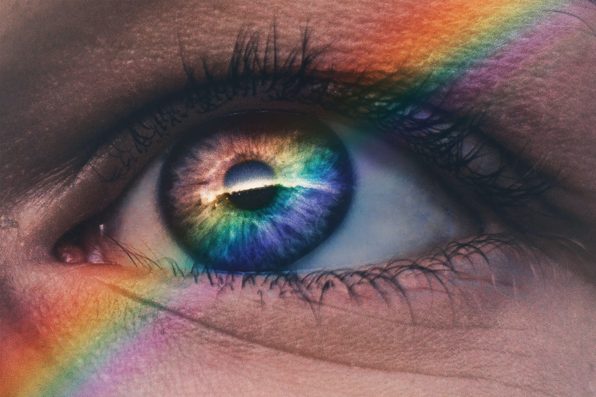
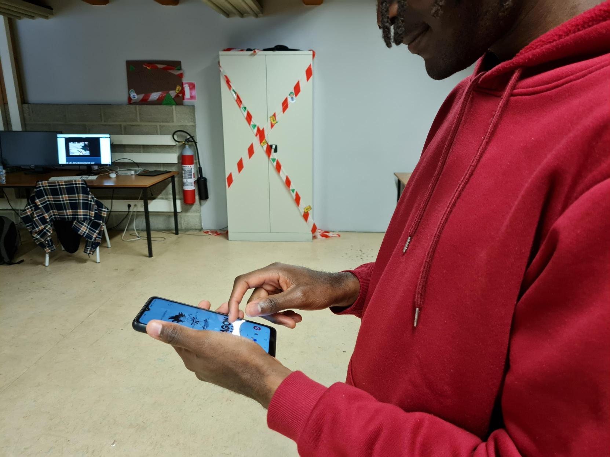
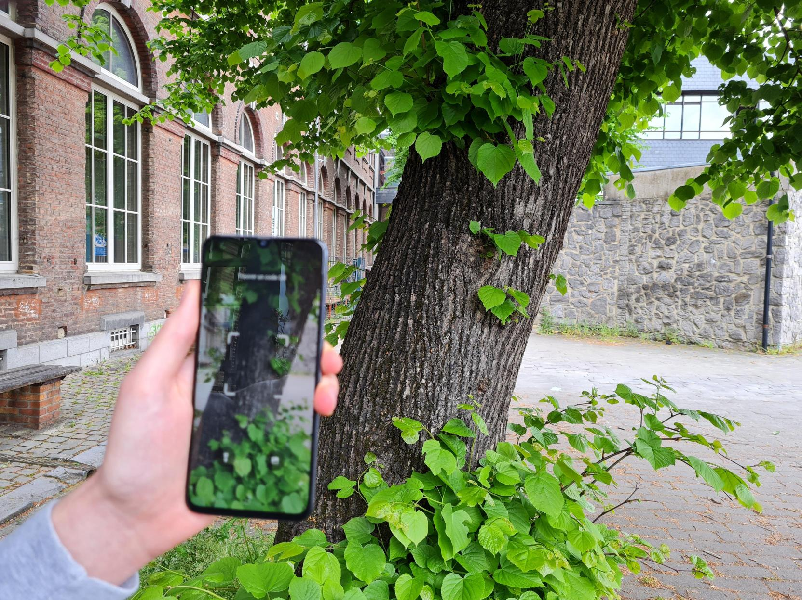
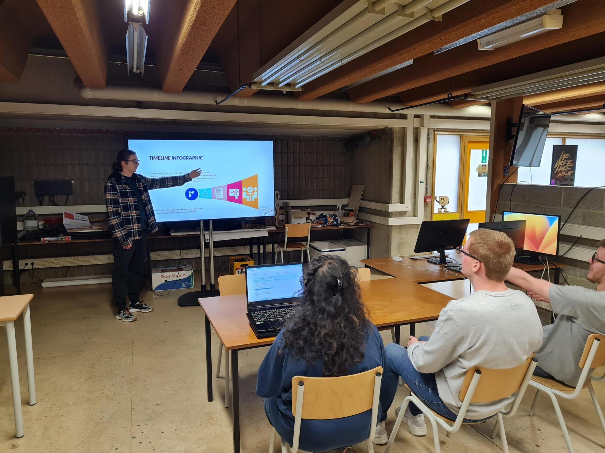

une application pour simplifier l’expérience d’achat de vêtement pour les daltoniens
Les daltoniens en colère
Pourquoi sont-ils en colère ? Découvrez comment j'ai travaillé avec des personnes daltoniennes pour trouver une solution à leurs défis quotidiens, en menant des entretiens avec deux groupes Facebook.

Couleur dans l'oeil pris sur unsplash
Des interviews révélatrices
Comment le daltonisme affecte-t-il la vie quotidienne ? Grâce à des entretiens menés avec des membres de groupes en ligne, j'ai pu en apprendre davantage sur les obstacles rencontrés par les personnes daltoniennes. Beaucoup ont des difficultés lorsqu'il s'agit de différencier les couleurs pour des tâches simples telles que l'achat de vêtements ou la participation à des événements sociaux. Heureusement, ces discussions ont conduit à une solution solide pour aider ces personnes à surmonter ces frustrations.
Couleur dans l'oeil pris sur unsplash
L’hypothèse la plus pertinente
Une approche innovante ? Découvrez mon application hypothétique pour daltoniens qui facilite l'achat de vêtements en affichant les codes couleur et les noms de couleurs. L’application se concentre sur les besoins des personnes daltoniennes et offre une fonctionnalité d'entraide qui permet aux utilisateurs de contacter rapidement des personnes non daltoniennes pour vérifier les couleurs affichées.

Couleur dans l'oeil pris sur unsplash
Module de développement sur mesure
Avec un scan, l’application affiche la couleur exacte et son code, vous permettant de choisir vos vêtements avec confiance. Vous pouvez également consulter d’autres services de l’application.

Couleur dans l'oeil pris sur unsplash
Présentation de mon TFA
Préparez-vous, à être captivé par trois anecdotes fascinantes sur la vie des daltoniens, avant de découvrir comment mon projet d'application peut les aider à distinguer les couleurs des vêtements. Je vais utiliser le storytelling pour captiver votre attention et je vais maintenir un ton enjoué et humoristique tout au long de ma présentation.

Couleur dans l'oeil pris sur unsplash
L’ADN de ma conclusion
Créer une application hypothétique, de scan de vêtements pour les personnes daltoniennes est une solution pour répondre à leurs besoins spécifiques en matière de choix de vêtements. Je mettrai en avant les valeurs d'entraide et d'autonomie pour aider les personnes atteintes de daltonisme à être plus indépendantes au quotidien. La présentation sera animée et enjouée pour mettre en avant les avantages de notre solution.